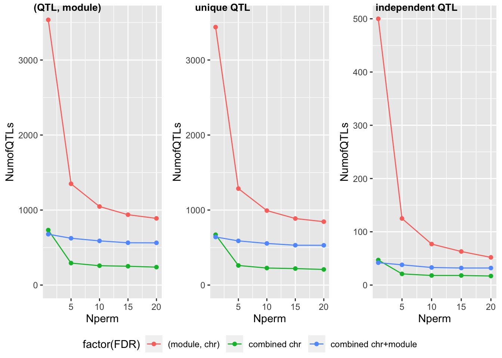
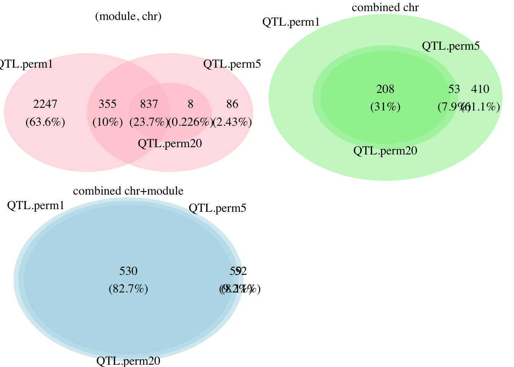
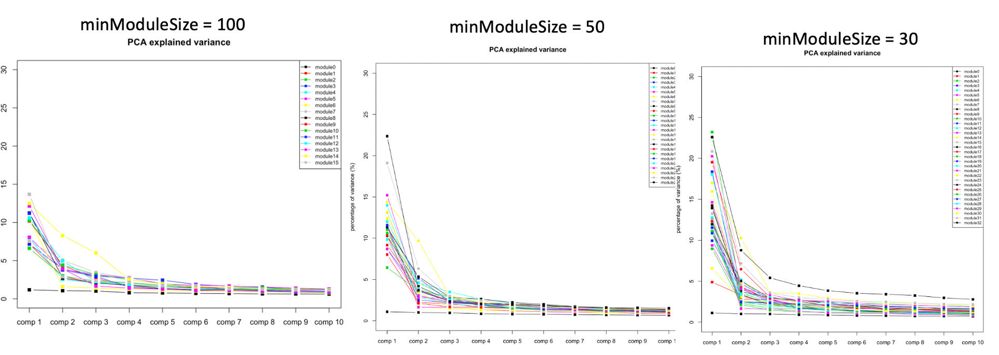
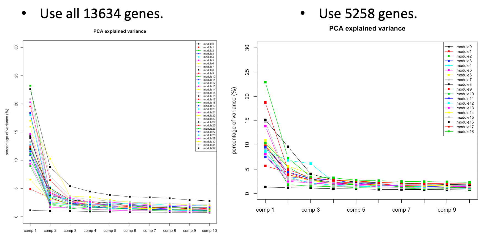
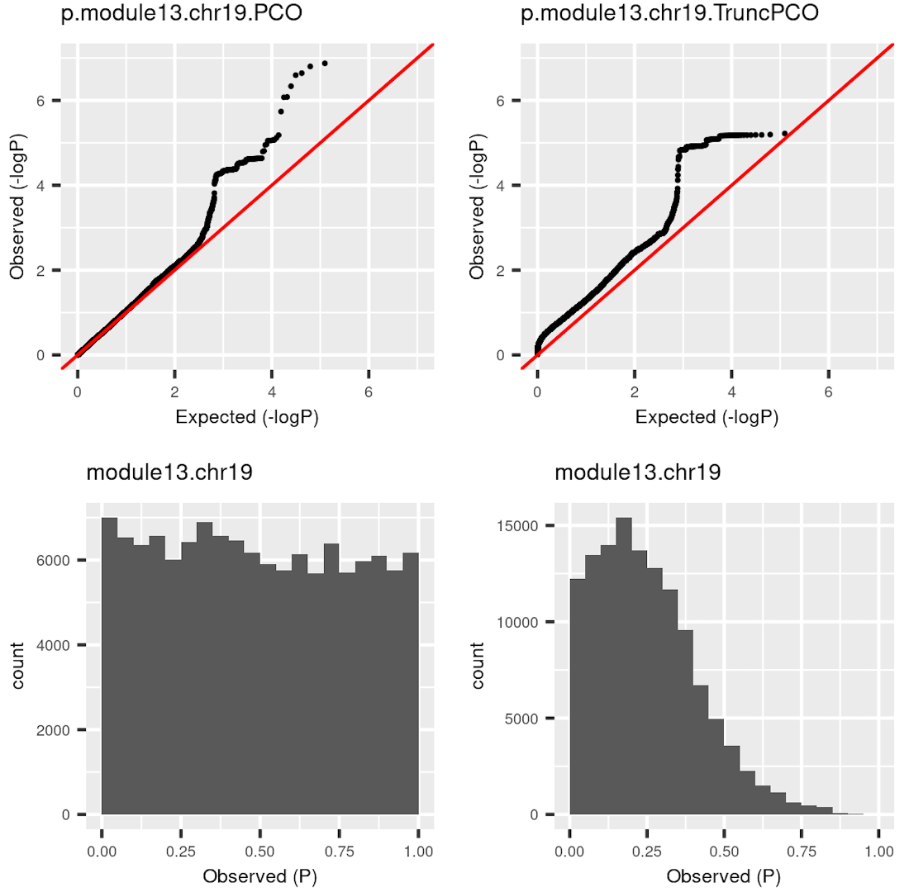
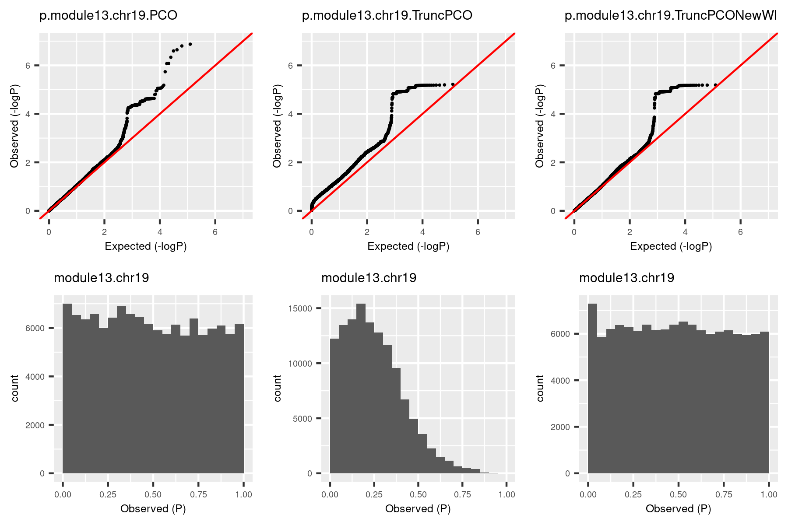
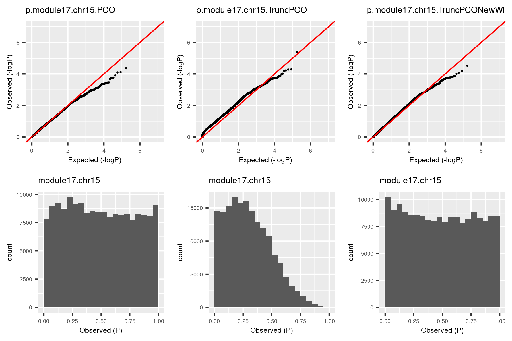
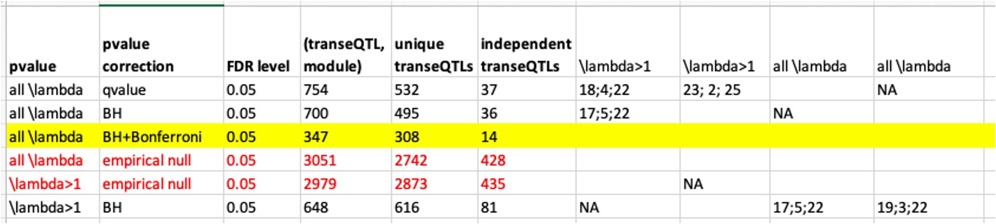

Log2020
Last updated: 2024-04-25
Checks: 7 0
Knit directory: GradLog/
This reproducible R Markdown analysis was created with workflowr (version 1.7.0). The Checks tab describes the reproducibility checks that were applied when the results were created. The Past versions tab lists the development history.
Great! Since the R Markdown file has been committed to the Git repository, you know the exact version of the code that produced these results.
Great job! The global environment was empty. Objects defined in the global environment can affect the analysis in your R Markdown file in unknown ways. For reproduciblity it’s best to always run the code in an empty environment.
The command set.seed(20201014) was run prior to running
the code in the R Markdown file. Setting a seed ensures that any results
that rely on randomness, e.g. subsampling or permutations, are
reproducible.
Great job! Recording the operating system, R version, and package versions is critical for reproducibility.
Nice! There were no cached chunks for this analysis, so you can be confident that you successfully produced the results during this run.
Great job! Using relative paths to the files within your workflowr project makes it easier to run your code on other machines.
Great! You are using Git for version control. Tracking code development and connecting the code version to the results is critical for reproducibility.
The results in this page were generated with repository version f1090b1. See the Past versions tab to see a history of the changes made to the R Markdown and HTML files.
Note that you need to be careful to ensure that all relevant files for
the analysis have been committed to Git prior to generating the results
(you can use wflow_publish or
wflow_git_commit). workflowr only checks the R Markdown
file, but you know if there are other scripts or data files that it
depends on. Below is the status of the Git repository when the results
were generated:
Ignored files:
Ignored: .DS_Store
Ignored: .Rhistory
Ignored: .Rproj.user/
Ignored: analysis/.DS_Store
Ignored: analysis/.Rhistory
Unstaged changes:
Modified: analysis/Trans.Rmd
Modified: analysis/week_log.Rmd
Note that any generated files, e.g. HTML, png, CSS, etc., are not included in this status report because it is ok for generated content to have uncommitted changes.
These are the previous versions of the repository in which changes were
made to the R Markdown (analysis/Log2020.Rmd) and HTML
(docs/Log2020.html) files. If you’ve configured a remote
Git repository (see ?wflow_git_remote), click on the
hyperlinks in the table below to view the files as they were in that
past version.
| File | Version | Author | Date | Message |
|---|---|---|---|---|
| html | f1090b1 | liliw-w | 2024-04-25 | Build site. |
| html | ee58970 | liliw-w | 2024-04-25 | Build site. |
| html | c50b98f | liliw-w | 2024-04-25 | Build site. |
| html | 97b4ca1 | llw | 2022-01-03 | Build site. |
| html | 0894fed | liliw-w | 2021-07-08 | Update figures location |
| Rmd | d5b865c | liliw-w | 2021-07-08 | Move figures of Log2020 to asset folder |
| html | 51b1a4c | Lili Wang | 2021-01-04 | Build site. |
| Rmd | 23d78aa | Lili Wang | 2021-01-04 | wflow_git_commit(c("analysis/_site.yml", "analysis/index.Rmd", |
Dec 17
GTEx v8 Whole Blood
To make it easier for updates, I summarized all results here. ???
| FDR | (QTL, module) #10 | unique QTL #10 | independent QTL #10 |
|---|---|---|---|
| (module, chr) | 148 | 148 | 50 |
| combined chr | 8 | 8 | 5 |
| combined chr+module | 4 | 4 | 2 |
There are only 4 significant signals, including 3:56815721, 9:26583610, 9:26583818, and 9:26584038, of which 2 are independent. The first 3:56815721 is SNP rs1354034, which is an intron variant of gene ARHGEF3.
There are much fewer signals than DGN. To take a closer look at the signals pvalues, I plot the histogram of \(p<10^{-6}\).

GTEx_v8.Whole_Blood

DGN
It shows that pvalues of GTEx are generally larger than that of DGN. So there are fewer signals.
Is it due to the relatively small sample size? GTEx whole blood (670) v.s. DGN whole blood (913)? Run DGN using similar sample size?
Multiple permutations in Dec 01
Update results of perm20 using the completely independent permutations? For combined chr and module FDR, perm1 and perm20 don’t differ much? For combined chr FDR, perm20 is completely included in perm1? For module and chr FDR, most of perm20 signals are included in perm1?
Rerun completely independent samples for perm 5 and perm10? For multiple times?
Dec 14
eQTLGen
This full dataset includes 19942 genes that showed expression in blood tested and 10317 SNPs that are trait-associated SNPs based on GWAS Catalog.
After gene filter steps described in Dec 10, there are
4963 left. Applying the same filtering to 13634 DGN genes, there are
3695 genes left, among which 3642 are included in eQTLGen. So, I will
use these genes to do the downstream analysis, e.g. constructing
co-expressed gene modules.
The 3642 genes result in 19 gene modules. Next, I will do two things.
Apply PCO to the these modules and eQTLGen SNPs, based on eQTLGen zscores.
Remark: Among 10317 eQTLGen SNPs, 9918 have zscores for all genes on the different chromosomes.
FDR correction based on qvalue (threshold \(0.05\)).
2194 (module, signal) pairs; 909 unique signals.
The largest pvalue is \(5.82*10^{-4}\).
Use significance threshold as \(\frac{0.05}{\#DGN signals}\).
- Apply PCO to these modules and whole genome SNPs, based on tensorQTL zscores.
Dec 10
Description of datasets and mappability files
DGN
Genes expressed in DGN are based on the human genome GRCh37 and gene symbols were mapped to unique Ensembl gene ids according to Gencode v19, corresponding to the annotations used in the mappability file.
Gene annotation file for mappability is
gencode.v19.annotation.table.txt, which is based on the human genome GRCh37 using annotations from Gencode v19 and includes 57820 genes in total. Each of 57820 genes has a mappability score inhg19_gencode19_75merExon_36merUTR_2mismatch_gene_mappability.txt.gz. And only those gene pairs with cross-mappable score larger than 1 are included inhg19_gencode19_75merExon_36merUTR_2mismatch_cross_mappability_symmetric_mean.txt.gz.Not all DGN-expressed genes have mappbility info. So in the gene filtering step, I will first filter out genes that are included in the mappability file.
Remark: The pseudogene list
/project2/xuanyao/data/mappability/pseudogenes.txtonly includes pseudogenes in category “pseudogene” but not other pseudogene categories in filegencode.v19.annotation.table.txt. Since we need to remove all kinds of pseudogenes, using this list is enough.GTEx v8
Gene annotation file for expression matrices is
gencode.v26.GRCh38.genes_annotation_table.txt, which is based on the human genome GRCh38 using annotations from Gencode v26 and includes 56200 genes in total.Gene annotation file for mappability is
gencode.v26.annotation.table.txt, which is based on the human genome GRCh38 using annotations from Gencode v26 and includes 58219 genes in total. Each of 58219 genes has a mappability score inhg38_gene_mappability.txt.gz. And only those gene pairs with cross-mappable score larger than 1 are included inhg38_cross_mappability_strength_symmetric_mean_sorted.txt.gz.All 56200 genes used in expression matrices are included in the gene annotation file for mappability, which means they all have mappability info.
Gene filter
The following are the filtering steps.
Remove genes that are not in the gencode annotation file (Gencode v19 or Gencode v26).
This filtering step aims to remove genes without mappability info.
Remove genes that are not protein coding genes or lincRNA genes.
This step removes all pseudogenes and genes that don’t have clear “annotation and functional interpretations” and “avoid genes enriched for mapping artefacts”, like GTEx 2019 paper. We can have the gene class from the gencode annotation file.
Remove genes with mappability \(<0.9\).
Remove gene pairs with cross-mappability \(\ge 1\).
The cross-mappable gene pairs are defined to be all genes included in the cross-mappability file.
Remove genes that are not autosomal.
Number of genes left/removed in each filter step is summarized in the following table. “All” is for the number of all genes in the “Dataset”; “Annotated” is for genes included in the gencode annotation file; “Filtered” is for genes that are not protein coding/lincRNA, poorly mapped, cross-mapped, or not autosomal in total; “Filtered.info” gives genes in the four categories; “Final” gives genes for the downstream use.
| Dataset | All | Annotated | Filtered | Filtered.info | Final |
|---|---|---|---|---|---|
| DGN | 13634 | 12585 | 9953 | 453;2786;8705;1 | 3681 |
| TCGA | 17656 | 15994 | 12694 | 336;3504;10697;598 | 4962 |
eQTLGen?
We want to check if signals in DGN can be replicated using the full trans-eQTL summary statistics from eQTLGen. This full dataset includes 19942 genes that showed expression in blood tested and 10317 SNPs that are trait-associated SNPs based on GWAS Catalog. So it’s not what we expected for the whole genome. In addition, not all genes have zscores for all snps.
Dec 07
Update results for multiple permutations.
In order to check if keep increasing permutations will keep
decreasing signals, I ran more permutations, i.e. 1, 5, 10, 15, 20. See
section in Dec 01. The figures show that if we use the FDR
based on the combined chr and modules, maybe we should use 10
permutations rather than just 1 permutation, since the number of signals
starts to be stable from 10-perm.
GTEx genes
Last week, we wanted to check how many GTEx genes are cross-mapped, poorly mapped, or pseudogenes in the following way “If many genes not in the protein coding/lincRNA category don’t have mappability score or multimappablity scores, we can remove them too.”
However, I found that in the cross-mappability file, there are 27949
genes in total, the minimum cross-mappability score is 1 and 0.5 in
files *cross_mappability_strength.txt.gz and
*cross_mappability_strength_symmetric_mean_sorted.txt.gz,
respectively. So I think all genes in this cross-mappability file should
be considered cross-mapped (cross-mappability > 0), according to Battle
2018
For example, in whole blood, there are 20315 genes in total, among which, 14582 and 1189 are protein_coding and lincRNA, respectively, with the remaining 4544 genes in other catogories. Among 14582 protein coding genes, 9962 are in the cross-mappability file, 2015 have mappability of NA or \(<0.9\). Combined together, 9991 are removed, leaving 4591 genes.
- protein_coding: 14582, 9962, 2015, 9991, 4591
- lincRNA: 1189, 512, 215, 533, 656
- Others: 4544, 2622, 1476, 2668, 1876
Question: Can we simply use the GTEx genes that are protein coding/lincRNA?
eQTLGen and DGN
Some genes in DGN modules are not in eQTLGen trans dataset.
Do DGN provide the ENS id of the gene symbols?
New ways to filter DGN genes? (1) genes not in
gencode.v19.annotation.gtf.gz; (2) gene_type “pseudogene”;
(3)
Dec 01
Work I did.
Here I give a brief summary of my last week’s work. Firstly, I ran multiple permutations to generate multiple empirical nulls so that I can validate if our previous results based on one-time permutation are stable. Secondly, I ran GTEx datesets for all tissues.
Multiple permutations
The following table and figures summarize the signals under different numbers of permutations.
| FDR | (QTL, module) #1 | (QTL, module) #5 | (QTL, module) #10 | (QTL, module) #15 | (QTL, module) #20 |
|---|---|---|---|---|---|
| (module, chr) | 3536 | 1350 | 1047 | 938 | 889 |
| combined chr | 733 | 293 | 258 | 251 | 239 |
| combined chr+module | 678 | 624 | 589 | 564 | 563 |
| FDR | unique QTL #1 | unique QTL #5 | unique QTL #10 | unique QTL #15 | unique QTL #20 |
|---|---|---|---|---|---|
| (module, chr) | 3439 | 1286 | 993 | 887 | 845 |
| combined chr | 671 | 261 | 227 | 220 | 208 |
| combined chr+module | 641 | 589 | 555 | 531 | 530 |
| FDR | independent QTL #1 | independent QTL #5 | independent QTL #10 | independent QTL #15 | independent QTL #20 |
|---|---|---|---|---|---|
| (module, chr) | 500 | 125 | 77 | 63 | 52 |
| combined chr | 47 | 21 | 18 | 18 | 17 |
| combined chr+module | 42 | 38 | 33 | 32 | 32 |

NULL 
Before interpreting the reuslt, I will first describe these figures.
The table gives the number of signals under different FDR methods (“FDR”) and signal types (i.e. (QTL, module) signal pair, unique signal, independent signal). For each case combination, I also give the results based on one permutation (“#1”) and five permuations (“#5”).
For a more intuitive sense of these numbers, I also plot them in the second figure, where colors represent the FDR methods, sub-figures are for signal types, x-axis is for number of permutations, and y-axis is for number of signals.
To look at the difference and interactions of the signals under different permutations, I draw the Venn diagram in the third figure. Still, colors represent the FDR methods. For simplicity, I only looked at the unique signals.
Generally speaking, increasing the number of permutations decreases the number of signals.
For FDR based on each (module, chr) pair, there were 3439 unique QTLs under 1-perm. However, these signals decrease to 1286 after increasing the number of permutations to 5. From the Venn plot (red), we can see that among the 3439 QTLs from 1-perm, 2247 are no longer signals after increasing permutations.
For FDR based on combined chromosomes, using 1-perm and 5-perm generated 671 and 261 signals, respectively. All signals detected by 5-perm are also detected by 1-perm. 410 QTLs become insignificant under more permutations.
For FDR based on combined chromosomes and modules, using 1-perm and 5-perm generated 641 abd 589 signals, respectively. All signals detected by 5-perm are also detected by 1-perm. Only 52 QTLs become insignificant under more permutations.
The results show that (module, chr) pair and combined chromosomes-based FDR are not stable if we only use one permutation. However, combined chromosomes and modules-based FDR seems quite stable. (WHY?) In order to check if keep increasing permutations will keep decreasing signals, I am running 10 permutations.
Nov 23
Last week, I used three ways to correct for the multiple testing based on the empirical null distributions, including correction based on (1) each module and chromosome pair; (2) combined chromosomes for each module; and (3) combined all chromosomes and modules. For the signals obtained from these three ways, I looked at their pvalues and the chromosomes they are on and found out that the latter two correction ways make more sense. So next I will look at the enrichment of the signals’ nearest genes.
Some notes about what I did. I use the signals obtained from the combined chr’s and modules. I used all unique signals (rather than independent signals), i.e. 641 signals for DGN and 9196 for TCGA. For each signal, I define its nearest gene as the closest gene of which TSS is upstream/downstream 0.5Mbp away from the signal. As a result, there are 50 nearest genes for DGN and 548 for TCGA.
Next, I looked at the enrichment of these genes.
DGN
Since I am not able to share the link to the complete enrichment result, I posted the 47 genes used by David enrichment tool here to reproduce the results.
Under BH correction with 0.05 as threshold, there is one significant enrichment cluster: SPRY-domain-related, which includes four genes BTNL3, BTNL8, BTNL9, TRIM58.
I doubt that this enrichment happens because some signals are physically close to each other but their nearest genes are different. So I looked at the enrichment of genes that are closest to the independent signals (previously I used all signals). The gene list used by David is here. There is no enriched term under 0.05 BH.
TCGA
I post the 474 genes used by David enrichment tool here to reproduce the results.
Under BH correction with 0.05 as threshold, there are basically two types of enrichment.
- MHC class II receptor activity/immunity-related: Antigen processing and presentation, Rheumatoid arthritis, et al.
I also tried the independent signals (gene list is here). There is no enriched term under 0.05 BH.
GBAT signals
The following table summarizes the signals from GBAT and whether they are reproduced by our method.
From the Figure 4 of GBAT
paper, there are 5 labeled transcription factors that regulate
multiple genes in trans. I checked that if these 5 genes have nearby
SNPs that are identified as signals in our analysis
(Regulator.signal). Then checked the modules the signals
correspond to (signal.module). Next, I checked whether the
TF target genes identified by GBAT (Target) are in our
modules (Target.in.module). If so, check which module these
genes are (Target.module).
The regulator PLAGL1 is close to the signal 6:144304358, which corresponds to module 11. Only 5 of this regulator’s target genes are in our modules and none of them are clustered into module 11.
The regulator NFE2 is close to the signal 12:54685880, which corresponds to module 1 and module 11. Among the 6 target genes, 2 are in our modules. One is in module1, the other one is in module 5.
The regulator NFKBIA is close to the signal 14:35602108, which corresponds to module 11. Among the 3 target genes, one is in our modules and it is in module 11.
The regulator IKZF1 is close to multiple signals, which are introns of IKZF1. The signals correspond to multiple modules including 1,2,5,6,7,8,11,18. Among the regulator’s 4 target genes, one is in our modules and it is in module 18.
The regulator SENP7 is not close to any signals.
| Regulator | Regulator.chr | Regulator.start | Regulator.end | Regulator.signal | signal.module | Target | Target.in.module | Target.module |
|---|---|---|---|---|---|---|---|---|
| PLAGL1 | chr6 | 144261436 | 144329396 | 6:144304358 | 11 | PAQR7;IDI1;MAPKAPK3;VAV1;TTC9;RGL4;CERS2;RAB37;JAK3;HM13;PNPLA1;OGDH;AMPD2;CYFIP2;TGM3;CKAP4;GPX3;PRAM1;CD82;MFSD12;AP5B1;GAPVD1;IQCE;BRAT1 | AMPD2;CERS2;MAPKAPK3;TTC9;TGM3 | 7;8;6;0;2 |
| NFE2 | chr12 | 54685890 | 54694821 | 12:54685880 | 1;11 | SPOCD1;EPS15L1;VIL1;TMEM158;NCF4;FRMD3 | TMEM158;NCF4 | 1;5 |
| NFKBIA | chr14 | 35870719 | 35873955 | 14:35602108 | 11 | RELB;GHRL;NFKB2 | GHRL | 11 |
| IKZF1 | chr7 | 50348295 | 50472798 | introns | 1;2;5;6;7;8;11;18 | KIAA0319L;IGF2R;DUSP13;MICAL2 | DUSP13 | 18 |
| SENP7 | chr3 | 101043048 | 101232056 | ZNF418;ZNF671;ZNF211;ZNF304;ZNF135;ZNF551;TRAPPC2P1;ZNF547;ZNF134;ZNF256;ZNF416;ZNF667-AS1;OPLAH;ZNF649;ZNF85;ZNF264 | OPLAH | 7 | ||
Look at some top signals
I looked at part of the top signals with very small pvalues. The following table summarizes the signals’ postions, the corresponding modules, pvalues, the signal’s nearest gene, and the gene info. The first two rows give the signals that are near two TFs, IKZF1, KLF2.
Notes: Some pvalues are zero because they are smaller than the numerical precision (\(<10^{-16}\)).
| snp | pos | module | pvalue | nearest_gene | gene.chr | gene.start | gene.end |
|---|---|---|---|---|---|---|---|
| rs10251980 | 7:50366637 | 1;2;5;6;7;11;18 | 3.21e-11;0;1.86e-10;4.30e-12;0;0;6.08e-11 | IKZF1 | chr7 | 50348295 | 50472798 |
| rs3745318 | 19:16436262 | 12 | 4.51e-12; | KLF2 | chr19 | 16435636 | 16439496 |
| rs194862 | 7:103786280 | 18 | 4.0e-8; | ORC5 | chr7 | 103808623 | 103848495 |
| rs6445826 | 3:56848999 | 1 | 0 | ARHGEF3 | chr3 | 56761447 | 56950464 |
| rs12492506 | 3:188511248 | 18 | 5.11e-8; | LPP | chr3 | 187871685 | 188608460 |
| rs2592551 | 2:85780131 | 7 | 1.30e-12; | GGCX | chr2 | 85771842 | 85788616 |
Nov 16
Work I did.
For the last week, I re-write the whole pipeline into snakemake files, so that I can run different datasets with ease. script
Before listing the results, I will first describe the key steps in the pipeine.
- Construct co-expressed modules using
minModuleSize=20. - Compute zscores by tensorQTL.
- Compute pvalues by TruncPCO.
- Adjust for multiple testing based on one-time permutation, followed by Bonferroni.
Results summary.
This table is for the results summary.
| Dataset | nGene | nModule | pvalue | pvalue correction | FDR level | “(transeQTL, module)” | unique transeQTLs | Num nearest genes | independent transeQTLs | Num nearest genes indep |
|---|---|---|---|---|---|---|---|---|---|---|
| DGN | 11979; 8120; 3859 | 21 | TruncPCO | empirical null | 0.05 | 3536 | 3439 | 500 | ||
| DGN | empirical null combined chr | 733 | 671 | 47 | ||||||
| DGN | empirical null combined chr+module | 678 | 641 | 50 | 42 | 38 | ||||
| TCGA | 17673;8963;8710 | 81 | TruncPCO | empirical null | 0.05 | 17210 | 17171 | 2063 | ||
| TCGA | empirical null combined chr | 8556 | 8548 | 317 | ||||||
| TCGA | empirical null combined chr+module | 9205 | 9196 | 548 | 423 | 331 |
TCGA
The following three plots are for FDR correction based on each module and chr pair; combined chr’s for each module; combined chr’s and modules.
The first plot is for the 2063 independent signals. The left plot is the histogram of \(-logp\). Since signals with \(p<10^{-16}\) have pvalue as 0 in R, here I give these signals pvalue of \(10^{-17}\), which have \(-logp=17\). The plot shows that among 2063 signals, most of them have \(p \approx 10^{-5}\).
Question: Is this too small for claiming significance for trans?
The right plot is the histogram of the chromosomes the signals are on.
(module, chr) pair
| Version | Author | Date |
|---|---|---|
| d5b865c | liliw-w | 2021-07-08 |
combine chr
| Version | Author | Date |
|---|---|---|
| d5b865c | liliw-w | 2021-07-08 |
combine chr and modules
| Version | Author | Date |
|---|---|---|
| d5b865c | liliw-w | 2021-07-08 |
DGN
The following three plots are for FDR correction based on each module and chr pair; combined chr’s for each module; combined chr’s and modules.
As showed in the plot for DGN, among 500 independent signals, most of their pvalues have \(p \approx 10^{-5}\).
(module, chr) pair
| Version | Author | Date |
|---|---|---|
| d5b865c | liliw-w | 2021-07-08 |
combine chr
| Version | Author | Date |
|---|---|---|
| d5b865c | liliw-w | 2021-07-08 |
combine chr and modules
| Version | Author | Date |
|---|---|---|
| d5b865c | liliw-w | 2021-07-08 |
GTEx
- Expression data pre-process.
Below is how GTEx 2020 paper pre-processs expression data.
“Gene-level expression quantification was performed using RNA-SeQC [68]. Gene-level read counts and TPM values were produced using the following read-level filters: 1) reads were uniquely mapped (corresponding to a mapping quality of 255 for STAR BAMs); 2) reads were aligned in proper pairs; 3) the read alignment distance was ≤ 6; 4) reads were fully contained within exon boundaries. Reads overlapping introns were not counted. These filters were applied using the “-strictMode” flag in RNA-SeQC. Gene expression values for all samples from a given tissue were normalized for eQTL analyses using the following procedure: 1) read counts were normalized between samples using TMM [69]; 2) genes were selected based on expression thresholds of ≥0.1 TPM in ≥20% of samples and ≥6 reads (unnormalized) in ≥20% of samples; 3) expression values for each gene were inverse normal transformed across samples.” source
- Genotype data pre-process.
Any filter? QCed? script?
Nov 09
Paper using permutation-based false discovery rate.
This paper uses permutations to correct for FDR of a complex test statistic. Like in our cases, it’s unrealistic to do thousands of permutations. Specifically, they did 10 permutations and adjusted pvalues based on these 10 empirical null distributions. They justied why 10 permutations are enough.
Modify PCO code from one SNP a time to multiple SNPs.
- davies method
davies.R: Remove PACKAGE=MPAT; Run in
command line R SMP SHLIB qfc.cpp; Run in R
dyn.load("./script/qfc.so")
- liumod method
Use liumod method when p.WI ==0 | p.WI < 0.
Snakemake pipeline.
Results
z (tensorQTL) + p (TruncPCO) + FDR (one time permutation).
z & p: add index for observe data or permutation.
minModuleSize=20 in WGCNA.
DGN; TCGA
Nov 02
Why use minModuleSize=30 in WGCNA for TCGA?
There are three reasons why I set the minimum number of genes in modules to be 30.
1. DGN used this setting.
At first, we looked at the variance explained by the top three PC of
each modules under different settings,
i.e. minModuleSize=100, 50, 30. We found that under setting
of 30, the top three PC’s explained more variance, so we tended to use
30.

| Version | Author | Date |
|---|---|---|
| d5b865c | liliw-w | 2021-07-08 |
The above plots used all 13634 genes without removing any poorly mapped genes. Next, I removed the poorly mapped genes, with 5258 genes left. I used 30 to cluster these 5258 genes and resulted in 18 modules. We then looked at the explained variance and found nothing seemed wrong. So we decided to use 30 for WGCNA and these 18 modules for downstream analysis.

| Version | Author | Date |
|---|---|---|
| d5b865c | liliw-w | 2021-07-08 |
2. 30 is the default module size in WGCNA tutorial, and also used by the elife paper.
WGCNA
tutorial used 30 as default. The elife method also
used the default parameters. (Correction: elife method used the
default parameters in the R package, where
minClusterSize = 20.)
3. I tried other parameters, e.g. 100. 50, which both increase the unclassified genes.
| minModuleSize | Num.unclassified.genes | Num.modules | Max.num.genes |
|---|---|---|---|
| 100 | 5247 | 4 | 1972 |
| 50 | 3251 | 33 | 397 |
| 30 | 2908 | 57 | 356 |
| 20 | 2813 | 81 | 326 |
Look into enrichment of TCGA modules.
Here is the complete enrichment result.
KEGG pathway enrichment
| source | term_name | sig_module | p_adjusted |
|---|---|---|---|
| KEGG | ErbB signaling pathway | 21 | 0.008964903 |
| KEGG | Neuroactive ligand-receptor interaction | 3 | 0.015524997 |
| KEGG | Mucin type O-glycan biosynthesis | 20 | 0.016931426 |
| KEGG | Human papillomavirus infection | 2 | 0.019400355 |
| KEGG | Prolactin signaling pathway | 2 | 0.041320205 |
| KEGG | Cocaine addiction | 2;26 | 0.04269822;0.049447144 |
| KEGG | PI3K-Akt signaling pathway | 21 | 0.048894331 |
ErbB signaling pathway: “ErbB family members and some of their ligands are often over-expressed, amplified, or mutated in many forms of cancer, making them important therapeutic targets. For example, researchers have found EGFR to be amplified and/or mutated in gliomas and NSCLC while ErbB2 amplifications are seen in breast, ovarian, bladder, NSCLC, as well as several other tumor types. [source]
Neuroactive ligand-receptor interaction:
Mucin type O-glycan biosynthesis: “Changes in mucin-type O-linked glycosylation are seen in over 90% of breast cancers” [source] [source]
Human papillomavirus infection: “We demonstrated that HPV is associated with breast cancer development, although the role of HPV in breast cancers is still questionable and further research is required to investigate, in more detail, the role of HPV infection in breast cancer.” [source]
Prolactin signaling pathway: “elevated PRL levels are correlated with increased breast cancer risk and metastasis” “In vitro studies have indicated a role for PRL in breast cancer proliferation and survival.” [source]
Cocaine addiction: ???
PI3K-Akt signaling pathway: “PI3K/Akt signaling pathway is key in the development of BC” (breast cancer) [source]
Debug code for TruncPCO.
I was doubting that TruncPCO (using only \(\lambda>1\)) code may have bugs because of the following weird qqplot and histogram of pvalues.

| Version | Author | Date |
|---|---|---|
| d5b865c | liliw-w | 2021-07-08 |
Rows are qqplot and histogram of pvalues. These pvalues are observed pvalues rather than null pvalues. Left column is for standard PCO (using all \(\lambda\)’s); right is for TruncPCO. I thought TruncPCO is weird because a histogram of pvalues shouldn’t be as skewed as the lower right one. This skewed plot means pvalues by TruncPCO are overall smaller than PCO. We thought this may be due to LD among snps, i.e. the tests are not independent. However, even with the LD complication, the histogram should be approximately flat as in the lower left plot, where the tests are not independent either.
So I looked into the code for TruncPCO and see if there are bugs I didn’t notice. (This paragraph explains what the bug is. See the histogram by the debugged code in next paragraph.) PCO uses the minimum pvalue of six tests as the test statistic, i.e. \[T_{PCO}=min(p_{PCMinP}, p_{PCFisher}, p_{PCLC}, p_{WI}, p_{Wald}, p_{VC})\]
Then use a inverse normal distribution to calculate pvalue of \(T_{PCO}\). So the key step is to compute the six pvalues. The bug happens in the step of computing \(p_{WI}\). The test statistic for this pvalus is, \[T_{WI}=\sum_{k=1}^K {z_k^2} = \sum_{k=1}^K {PC_k^2}=\sum_{k=1}^K {\lambda_k \chi_{1k}^2}\] ,where \(K\) is number of all PC’s of expression matrix, \(PC_k=u_k^Tz \sim N(0, \lambda_k)\), \(u_k\) is k-th eigenvector with eigenvalue \(\lambda_k\); \(z\) is zscore vector for one snp to \(K\) genes, \(\chi_{1k}\) is chi-square distribution with DF 1. If we only use \(\lambda>1\) for TruncPCO, i.e. \(T_{WI}^{Trunc}=\sum_{k=1}^{k_0} {PC_k^2}=\sum_{k=1}^{k_0} {\lambda_k \chi_{1k}^2}\), what I only need to do is to subset \(\lambda\)’s and \(PC_k\)’s. That is what I did for other five tests. However, in the original PCO package, \(T_{WI}\) is calculated using \(\sum_{k=1}^K {z_k^2}\) and I should have changed \(z_k\)’s to \(PC_k\)’s. But I missed this. So, \(T_{WI}\) actually used all \(K\) \(z_k\)’s, and it’s larger than the real \(T_{WI}^{Trunc}\), therefore the pvalue is smaller than the real \(p_{WI}^{Trunc}\). That is why in the above plot, TruncPCO has many small pvalues and its histogram skews to the left.
So I used the debuged code and re-computed pvalues for the same (module, chr). The result is in the third column.

| Version | Author | Date |
|---|---|---|
| d5b865c | liliw-w | 2021-07-08 |
The histogram became approximately flat. For this (module13, chr19), there seems to be some signals. Next, I give another example (module, chr), where there seems no signals.

| Version | Author | Date |
|---|---|---|
| d5b865c | liliw-w | 2021-07-08 |
The histogram by the debugged TruncPCO is still almost flat in this cese, which makes sense.
Now I have the updated pvalues. Next, I rerun TruncPCO for the null zscore, and use the null p’s to adjust for these updated pvalues. Then see how many snps are significant (\(p_{adj}<\frac{0.05}{18\times22}\)). I do this because I want to see how are the signals by this debugged TruncPCO compared with those by the previous TruncPCO. For now, I checked for the above two (module, chr) and the signals are almost the same.
From now on, I will use this correct version of TruncPCO to compute p’s for other datasets and update p’s for datasets I’ve analyzed.
Use tensorQTL do more permutation?
So far, the way we use to adjust p is to permute samples once, calculate null z, then null p, then using this null p distribution to adjust the observe p’s. This one-time permutation procedure should work. We do the permutation once because multiple permutation is computation-time heavy. So can we use tensorQTL to make permutation faster?
As far as I understand, tensorQTL is like FastQTL, which does fast permutation to provide the adjusted minimum pvalues for each gene. This is gene-level adjustment, not the snp-level adjustment as we want. So we can’t have more faster permutations by tensorQTL.
Do another round of permutation.
To see how stable the signals are, I do another round of permutation for the above two (module, chr). Here I use TruncPCO for pvalues and empirical null for p adjustment. The following table gives the results.
| example | oldTruncPCO.perm.1 | TruncPCO.perm.1 | TruncPCO.perm.2 |
|---|---|---|---|
| (module13,chr19) | 157 | 159 | 155 |
| (module17,chr15) | 1 | 0 | 1 |
Notation table
To make it clear, the following table is for notations of different methods.
| data | PCO | TruncPCO.old | TruncPCO |
|---|---|---|---|
| observe | p.PCO | NA | p.TruncPCO |
| null | p.null.PCO | NA | p.null.TruncPCO |
- “data” is for the data used. “observe” means pvalues are calculated
from the observed data. “null” means pvalues are computed from
permutation data. This is needed because we need to adjust pvalues in
the downstream FDR analysis using the empirical null distribution of
pvalues.
- We use empirical null because snps are in LD, so the tests are not independent and therefore the null distribution of p is not necessarily uniform.
- Why not using BH? BH assumes independent tests and uniform null.
- Why not using Bonferroni? Conservative for snp-level FDR correction, particularly for the trans snp-level FDR.
Approaches to deal with the multiple testing in QTL studies, cis and trans. (???)
- “PCO” is the standard PCO using all \(\lambda\)’s. “TruncPCO.old” is PCO using only \(\lambda>1\). This is the method used for all results obtained before 11/02/2020. I added “.old” because the code of this TruncPCO has bugs. “TruncPCO” uses the debugded code.
Signals we have so far.

| Version | Author | Date |
|---|---|---|
| d5b865c | liliw-w | 2021-07-08 |
R version 4.2.3 (2023-03-15)
Platform: x86_64-apple-darwin17.0 (64-bit)
Running under: macOS Big Sur ... 10.16
Matrix products: default
BLAS: /Library/Frameworks/R.framework/Versions/4.2/Resources/lib/libRblas.0.dylib
LAPACK: /Library/Frameworks/R.framework/Versions/4.2/Resources/lib/libRlapack.dylib
locale:
[1] en_US.UTF-8/en_US.UTF-8/en_US.UTF-8/C/en_US.UTF-8/en_US.UTF-8
attached base packages:
[1] grid stats graphics grDevices utils datasets methods
[8] base
other attached packages:
[1] gridExtra_2.3 VennDiagram_1.7.3 futile.logger_1.4.3
[4] ggpubr_0.6.0 ggplot2_3.4.3 workflowr_1.7.0
loaded via a namespace (and not attached):
[1] Rcpp_1.0.11 tidyr_1.3.0 getPass_0.2-2
[4] ps_1.7.5 rprojroot_2.0.3 digest_0.6.33
[7] utf8_1.2.3 R6_2.5.1 plyr_1.8.8
[10] futile.options_1.0.1 backports_1.4.1 evaluate_0.21
[13] httr_1.4.6 highr_0.10 pillar_1.9.0
[16] rlang_1.1.1 rstudioapi_0.15.0 whisker_0.4.1
[19] car_3.1-2 callr_3.7.3 jquerylib_0.1.4
[22] rmarkdown_2.23 labeling_0.4.3 stringr_1.5.0
[25] munsell_0.5.0 broom_1.0.5 compiler_4.2.3
[28] httpuv_1.6.11 xfun_0.39 pkgconfig_2.0.3
[31] htmltools_0.5.5 tidyselect_1.2.0 tibble_3.2.1
[34] fansi_1.0.4 dplyr_1.1.3 withr_2.5.1
[37] later_1.3.1 jsonlite_1.8.7 gtable_0.3.4
[40] lifecycle_1.0.3 git2r_0.32.0 magrittr_2.0.3
[43] formatR_1.14 scales_1.2.1 cli_3.6.1
[46] stringi_1.7.12 cachem_1.0.8 carData_3.0-5
[49] farver_2.1.1 ggsignif_0.6.4 reshape2_1.4.4
[52] fs_1.6.2 promises_1.2.0.1 bslib_0.5.0
[55] generics_0.1.3 vctrs_0.6.3 cowplot_1.1.3
[58] lambda.r_1.2.4 tools_4.2.3 glue_1.6.2
[61] purrr_1.0.2 processx_3.8.2 abind_1.4-5
[64] fastmap_1.1.1 yaml_2.3.7 colorspace_2.1-0
[67] rstatix_0.7.2 knitr_1.43 sass_0.4.6